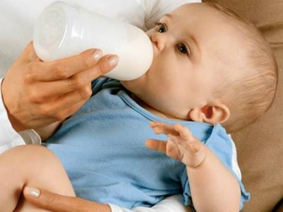

Отнятие от груди и новая пища
для ребенка (прикорм)

К концу 1-го года жизни малыша целесообразно отнимать от груди, даже если у матери есть грудное молоко. Для прекращения лактации женщина должна носить бюстгальтер, плотно облегающий грудь, ограничить потребление жидкости и полностью прекратить сцеживание молока.
В течение нескольких дней она будет чувствовать безболезненное распирание молочных желёз, после чего лактация исчезнет.
Если же напряжение в груди сопровождается сильной болезненностью, следует крест-накрест туго перевязать обе молочные железы сложенной в несколько раз простыней или длинным широким полотенцем и 3-4 раза в день на 5-7 минут прикладывать к ним холодные компрессы или пузырь со льдом.
Но это считается больше народным методом. Существует и медикаментозный способ прекращения лактации. По поводу, какие таблетки принять, чтобы остановилось грудное молоко, необходимо в обязательном порядке посоветоваться с врачом.
Не принимайте лекарства, которые посоветовали вам знакомые, подруги и т.д.!
Отлучение ребёнка от груди можно проводить лишь в том случае, если он здоров. При заболевании малыша прекращение грудного вскармливания может ухудшить его состояние и даже привести к некоторым осложнениям, в первую очередь со стороны желудочно-кишечного тракта.
Нарушения в пищеварении нередко возникают также при отнятии ребёнка от груди в летние месяцы, и если именно летом ребёнок достигает годовалого возраста, то кормление грудью целесообразно прекратить в 10-11 месяцев, даже если у матери достаточно молока.
Прикорм
Прикорм при грудном вскармливании впервые вводится в рацион ребёнка на 5-ом месяце жизни.
В этот период малышу уже не хватает тех питательных веществ, которые поступают с материнским молоком, и с прикормом он получает дополнительные минеральные вещества, углеводы, витамины, биостимуляторы, а также клетчатку, которая не имеет пищевой ценности, однако стимулирует двигательную активность кишечника.
Густой по консистенции, прикорм является промежуточным продуктом, подготавливающим переход грудного ребёнка от потребления жидкой пищи к более плотной и твёрдой.
Новую пищу дают ребёнку постепенно, начиная с малых количеств (1-2 чайные ложки), перед кормлением грудью.
Если ребёнок хорошо переносит первый пробный прикорм, то количество его постепенно увеличивают с каждым днём на 1-2 чайные ложки, чтобы через 7-10 дней можно было полностью заменить одно грудное кормление новой пищей.
В качестве первого прикорма рекомендуется использовать овощное пюре.
В его состав следует включать разнообразные овощи: кочанную и цветную капусту, брокколи, кабачки, тыкву, картофель, причём последний не должен превышать половины общего объёма блюда.
Морковь, свеклу, томаты стоит вводить позднее (примерно с 6-7 месяцев морковь, свеклу и томаты с 9-10 месяцев) и очень аккуратно, так как они являются сильными аллергенами. Начать можно с сока данных овощей, особенно полезна свекла для малышей, страдающих запорами.
Для приготовления овощного пюре нарезанные мелкими кусочками овощи отваривают в подсоленной воде до полного разваривания (1,5-2 часа), после чего воду сливают, а горячие овощи размягчают в блендере до образования пюре без комочков. В полученную массу добавляют молоко или овощной отвар до получения консистенции густой сметаны.
К концу 5-го месяца жизни одно молочное кормление полностью заменяют овощным пюре, количество которого постепенно доводят до 150 г.
При желании и разрешении педиатра в овощное пюре можно добавлять небольшое количество яичного желтка, сваренного вкрутую (варить после закипания 15-20 минут).
Постепенно, если ребенок хорошо принял желток, его количество увеличивают.
С 5-ти месяцев можно давать малышу размоченные до кашеобразной консистенции детские печенья.
На 6-м месяце ребёнку начинают давать 2-й прикорм ‒ кашу, которую готовят из гречневой, овсяной, рисовой, манной круп, либо из готовой каши, которая продается в магазине. Кашу вводят в рацион малыша также постепенно.
Ещё через месяц меню ребёнка расширяют: появляется мясной бульон с сухариком, который через 1-2 недели заменяют овощным супом на мясном бульоне.
К концу 7-го месяца малышу можно дать отварное мясо: нежирное мясо кур, цыплят, индеек, телятину, говядину. Вместе с мясом целесообразно использовать субпродукты: печень, язык.
Сначала из мяса готовят фарш или пюре, на 10-м месяце жизни ‒ фрикадельки, на 11-12-ом ‒ пудинги, паровые котлеты, тефтели.
Для приготовления этих блюд можно использовать и рыбу: треска, хек, судак.
К концу 1-го года один раз в неделю молочную кашу целесообразно заменять отварной вермишелью или молочной лапшой.
Если вместо грудного молока (при искусственном вскармливании) или в дополнение к нему (при смешанном) используют адаптированные молочные смеси, то все виды прикорма вводят в рацион малыша в те же сроки, что и при грудном вскармливании; при использовании неадаптированных молочных смесей ‒ на 2-3 недели раньше.
Следует помнить, что у годовалого ребёнка ещё слабый желудок, поэтому требуется особая кулинарная обработка пищи и строго выдержанное меню.
Пища даётся в варёном и размельчённом виде.
Детям этого возраста нельзя давать жареное мясо, жареный картофель, обычные консервы, сосиски, колбасу, острые приправы, натуральные кофе и какао, конфеты и шоколад, переводить их на общий семейный стол без учёта возрастных возможностей. Всё это способно вызвать расстройство пищеварения.
Будьте терпеливы при кормлении ребёнка. Дайте ему возможность не только прожевать пищу, но и почувствовать её вкус. Не следует кормить ребёнка насильно, предлагать ему между кормлениями фрукты, печенье, хлеб. Полезно убеждать, что пища вкусная (даже в раннем возрасте ребёнок понимает мимику и интонацию), проявляя особое терпение и настойчивость при введении новых блюд.
Лучше всего, сразу как ребенок научится садиться, кормите его за столиком для кормления. С 7-8 месяцев надо приучать пить из поильника, чтобы потом легче перейти к чашке, а с появлением зубов ‒ к более плотной пище.
Соки и фруктовые пюре являются источником витаминов, минеральных солей, органических кислот, возбуждают аппетит, стимулируют выделение пищеварительных соков, улучшают двигательную функцию кишечника, способствуют развитию в нём нормальной микрофлоры.
Овощные, фруктовые и ягодные соки вводят в питание малыша с конца 1-го ‒ начала 2-го месяца жизни, а с 1,5 месяца ‒ фруктовое пюре. Первым используют яблочный сок, затем черносмородинный или вишнёвый. С 3-го месяца можно использовать сливовый, клюквенный, персиковый, абрикосовый, айвовый, морковный, свекольный, черничный, брусничный соки.
Гранатовый, клубничный, земляничный, апельсиновый, мандариновый, лимонный, томатный следует назначать очень осторожно, так как они нередко вызывают аллергические реакции (кожную сыпь, понос) и поэтому противопоказаны при экссудативном диатезе. Особенно часто эти реакции возникают от виноградного сока, его вообще не рекомендуется давать ребёнку 1-го года жизни.
Фрукты и овощи, используемые для приготовления соков, должны быть свежими, зрелыми и целыми, без пятен и царапин. Их моют холодной водой, обливают кипятком и раздавливают в соковыжималке или вручную. В последнем случае их натирают на тёрке (лучше пластмассовой, так как металлическая окисляет и разрушает витамин С), а полученную кашицу процеживают через сито или стерильную двухслойную марлю в стеклянную, фарфоровую или эмалированную посуду.
Фруктовые соки дают ребёнку сразу после приготовления, их не рекомендуется кипятить.
Как и всякий новый продукт, сок назначают осторожно и постепенно, начиная с 5-6 капель на первый приём. На 2-м месяце жизни ребёнку необходимо 30 мл сока в сутки, в 6-7 месяцев ‒ 60 мл, к концу года ‒ 90-100 мл.
Суточную дозу сока можно дать в несколько приёмов, причём в конце кормления, то есть после основной еды. Так же постепенно вводят и фруктовое пюре (готовят из свежих яблок, груш, слив, вишен, персиков, айвы, абрикосов, бананов), необходимое количество которого в граммах равно принимаемому ребёнком объёму сока в миллилитрах.
Детские смеси
Детские молочные смеси, изготовляемые в промышленных условиях, а также на молочных кухнях, используются при недостатке или полном отсутствии грудного молока. Лучшие из них по своему химическому составу в значительной степени приближены к женскому молоку, но не являются абсолютно полноценными его заменителями.
Различают неадаптированные и адаптированные детские молочные смеси.
Молочная основа последних в процессе изготовления подвергается специальной обработке, в связи с чем адаптированные смеси по своему составу максимально приближены к женскому молоку.
Кроме того, смеси обеих групп могут быть либо сладкими, либо кислыми (ацидофильными). Их выпускают в сухом или жидком виде. Особо следует заметить, что для восстановления сухой смеси, то есть приготовления из неё пригодного к употреблению жидкого продукта, необходимо использовать только кипячёную воду, а не молоко или молочные продукты.
Ацидофильные адаптированные детские молочные смеси ‒ наилучшие заменители женского молока, в максимальной степени обеспечивающие потребности грудного ребёнка в необходимых для его нормального роста и развития питательных веществах.
Кисломолочные неадаптированные смеси изготавливают на основе цельного коровьего молока, по своим свойствам они значительно уступают адаптированным продуктам.
Из-за большого количества белка и минеральных солей в их молочной основе эти смеси в цельном виде можно давать ребёнку лишь с 3-месячного возраста. В питании детей первых трёх месяцев жизни их используют разведёнными на 1/3 различными крупяными отварами (рисовым, гречневым, овсяным), то есть в виде так называемых В-смесей. Большое распространение получили кефир, приготовленный в детской молочной кухне.
Сладкие неадаптированные (простые) смеси ‒ наименее полноценные из всех детских молочных смесей. Их изготавливают путём добавления к натуральному коровьему молоку крупяных отваров. В зависимости от соотношения объёмов молока и отвара различают Б-смеси (1 часть молока и 1 часть отвара) и В-смеси (2 части молока и 1 часть отвара).
Первые используют в питании детей до 2-недельного возраста, вторые ‒ от 2 недель до 3 месяцев. Дети старше могут получать цельное подслащённое коровье или козье молоко, однако его следует использовать лишь в крайнем случае, когда отсутствуют все остальные детские молочные смеси.
Таким образом, при необходимости назначения ребёнку заменителя грудного молока в первую очередь следует использовать ацидофильные адаптированные молочные смеси, а при отсутствии последних ‒ сладкие адаптированные молочные смеси. Неадаптированные молочные продукты используют лишь тогда, когда нет адаптированных, или ребёнок не переносит их (рвота, понос, аллергические высыпания на коже и т. п.), причём в первую очередь необходимо ориентироваться на кисломолочные продукты.
При возможности выбора между сухой и жидкой формой продукта предпочтение следует отдавать жидкой. Это связано с тем, что при использовании даже самых щадящих способов высушивания молочной основы некоторые её полезные свойства безвозвратно утрачиваются.
Помимо этого, при восстановлении сухой смеси в домашних условиях концентрация готового к употреблению жидкого продукта нередко значительно отличается от необходимой, в основном превышая её. Это ведёт к перекорму ребёнка и способствует возникновению нарушений в деятельности желудочно-кишечного тракта.
Ниже представлена таблица с самыми известными детскими молочными смесями и их основными характеристиками:
СМЕСЬ
ПРОИЗВОДИТЕЛЬ
ПРИМЕРНАЯ ЦЕНА
ОСОБЕННОСТИ
Nutrilon
Голландия
370-410 руб.
Укрепляет иммунитет малыша, предотвращает повышенное газообразование и колики, поддерживает нормальное состояние кишечной микрофлоры. В ней содержатся такие полезные компоненты, как нуклеотиды, полиненасыщенные жирные кислоты, которые способствуют развитию мозга и поддерживают зрение, 29 витаминов, минералов, пребиотики
NaN
Нидерланды
370-420 руб.
Особенностью смеси является то, что в ее составе присутствуют рыбий жир, таурин, достаточное количество йода. Но среди компонентов все-таки есть и пальмовое масло, которое негативно влияет на усваивание кальция. Пребиотиков и мальтодекстрина также не обнаружено. Смесь быстро растворяется в воде.
Nestogen
Швейцария
250 руб.
В составе – стандартные компоненты: пребиотики, лактоза, деминерализованная молочная сыворотка, таурин. Среди плюсов необходимо отметить то, что она приятна на вкус, разводится хорошо, быстро, сахарозы в ней не обнаружено, стоимость смеси разумная. Полезные вещества способствуют регулярному стулу и улучшению процесса пищеварения. Недостатком является то, что в составе обнаружен мальтодекстрин – патока, которую производители добавляют для увеличения периода сытости ребенка, а это вещество может негативно отразиться на здоровье малыша. Также смесь сладковата на вкус, что может привести к развитию кариеса.
Агуша
Россия
200-250 руб.
Стимулирует работу иммунной системы малыша, регулирует деятельность ЖКТ; В состав смеси входят пребиотики, полезные для мозга и зрения жирные кислоты, нуклеотиды. Продукция создана при участии специалистов по детскому питанию РАМН. Смесь плохо растворяется в воде.
Hipp
Германия
380-420 руб.
В составе смеси входят не только необходимые натуральные компоненты в достаточном количестве, но и дополнительные питательные вещества. Состав тщательно сбалансирован, что уменьшает риск возникновения каких-либо проблем с пищеварением или аллергии. К недостаткам стоит отнести наличие в составе крахмала.
Similac
Дания
370-420 рублей
Присутствуют полезные добавки бетакаротина и лютеина, необходимых пребиотиков, витаминов и бифидобактерий, улучшающих пищеварение и общее самочувствие малыша.
Малютка
Россия
200-250 руб.
Смесь легко разводится, не пенится и не оставляет комочков; В состав входят белки молочной сыворотки, которые легче усваиваются грудничками, чем казеин, а также необходимое количество микроэлементов и витаминов, нуклеотидов и пребиотиков. Наличие L-триптофана, который обычно назначается при нервном напряжении или нарушениях сна, а также чрезмерного количества мальтодекстрина.
Friso Фрисолак
Нидерланды
370-420 руб.
Для недоношенных и маловесных детей, подходит для зондового питания. Смесь высоко адаптирована, в состав входит молочная сыворотка, необходимое количество нуклеотидов и витаминов. Легко разводится в воде и не образует пены. Однако, реальное количество железа и минералов отличается от заявленного производителем, отсутствуют бифидобактерии, улучшающие пищеварение.
Humana
Германия
550-600 руб.
Для недоношенных детей и склонных к аллергии, из коровьего молока, с витаминами и пребиотиками. Высокое содержание минералов, наличие всех необходимых веществ для роста и правильного развития малыша. Сбалансированный состав, приближенный к материнскому молоку. Отсутствие токсинов и искусственных сахаров, сладость обеспечивается только природными углеводами.
Nutrilak
Эстония / Россия
160-220 руб.
Не вызывает у грудничков колик или аллергии. Наличие в составе смеси белков молочной сыворотки, которые легче усваиваются детьми раннего возраста. Достаточное количество микровитаминов, нуклеотидов и жирных кислот.
Подбирайте молочную смесь с учетом особенностей вашего ребенка и рекомендаций педиатра.
Консервы для детского питания
Детские молочные смеси ‒ первые консервированные продукты в питании ребёнка раннего возраста. Наряду с ними выпускается ряд других специальных консервов для детского питания.
Разнообразен ассортимент фруктовых и ягодных соков. Осветлённые соки используют в питании детей первых трёх месяцев жизни, соки с мякотью ‒ с 4-го месяца. Выпускают их в стеклянных герметично закупоренных баночках объёмом 200 мл.
В такие же баночки расфасовывают и фруктовые пюре. Для их приготовления используют разнообразные фрукты, которые в промышленных условиях подвергаются очень тонкому измельчению, что способствует их высокой усвояемости. При этом ни по вкусовым свойствам, ни по пищевой ценности фруктовые консервы не уступают мякоти тех плодов, из которых они изготовлены.
Наряду с фруктами в рецептуру многих консервов входят ягоды и овощи (чёрная и красная смородина, малина, черника, шиповник, морковь, тыква, кабачки), а также молоко, сливки, манная крупа.
Очень удобны в употреблении овощные консервы, позволяющие до минимума сократить время приготовления весьма трудоёмких овощных блюд. Их можно использовать в качестве первого прикорма – овощного пюре.
Блюдо второго прикорма (каша) тоже может быть легко приготовлено из выпускаемых промышленностью сухих каш для детского питания. Повышенной пищевой ценностью обладают сухие каши, изготовленные на молочной основе адаптированных детских молочных смесей.
Для питания детей раннего возраста велика пищевая ценность мясных консервов, изготовляемых на основе мяса птицы или телятины, а также субпродуктов. Эти консервы выпускают 3 видов: гомогенизированные (тонкоизмельчённые), пюреобразные (мелкоизмельчённые) и крупноизмельчённые, что указано на упаковке.
Первые используют в рационе детей 5-7 месяцев, вторые ‒ в 7-8-месячном возрасте, третьи ‒ с 9 месяцев.
Для детей 1-го года жизни выпускают специальные рыбные консервы с овощами и крупами. Их можно применять для приготовления первых блюд.
Такие же консервы готовят из кальмаров, гребешков.
От себя могу добавить лишь следующее: да, детские готовые баночки с питанием (консервы) очень удобны – не стоит тратить время на приготовление пищи, просто подогрела и кормишь ребенка. Но! Неоднократно употребление готовых консервов вызывало привыкание ребенка к ним, малыш отказывался в последствии есть домашнюю пищу, приготовленную с любовью матерью. Поэтому советую использовать их только в крайнем случае или в ограниченном количестве.
А несколько рецептов детского прикорма вы найдете в статье Несколько рецептов для детского питания.